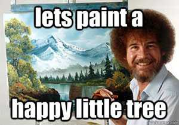

Space Jam, a 1996 website
Space Jam: it had focus states!
Inspecting Space Jam in Chrome DevTools
Captain Marvel: it's new but made to look old!
Emerging CSS Techniques & What They Mean for Accessibility
By Marcy Sutton
Head of Learning, Gatsby.js
MarcySutton.com in 2008
MarcySutton.com in 2008: It used tables and spacer images
MarcySutton.com in 2011
Target Corporate Website
Working Together
MarcySutton.com About page in 2011
MarcySutton.com in 2011: It used the Cufon font rendering technique
Cufon: fonts for the people (discontinued)
sIFR 2.0: Rich Accessible Typography for the Masses
sIFR: Accessibility
sIFR is fully accessible to screenreaders and other assistive technology. Don’t take our word for it. Ask Matt May of the W3C who endorses it as an accessible method to create rich typography on the web. Or ask Joe Clark, one of the world’s leading accessibility experts, whose interest in typography is only trumped by his interest in accessibility.
Who remembers JavaScript rounded corners?
üôã‚Äç‚ôÄÔ∏è
PSD sliced table layouts with text embedded in images?
üôÜ‚Äç‚ôÄÔ∏è
All Flash everything?
üôÖ‚Äç‚ôÄÔ∏è
CSS is so much better now
And we have great debugging tools!

Today
Let’s talk about NEW CSS
and
Accessible User Experience
- CSS Grid
- Flexbox
- :focus-visible
- :focus-within
- CSS Animations
- prefers-reduced-motion
- CSS-in-JS
- *
CSS Grid Layout
üôå

How to lay pages out before CSS Grid
- Layout tables
- Floats
- Multi-column layout
- display: inline-block
- Absolute positioning
- Padding hacks
- Manually splitting text content
Grid Concepts
- Fixed and flexible track sizes
- Item placement
- Creation of additional tracks to hold content
- Alignment control
- Control of overlapping content
Just read everything from @RachelAndrew and @JenSimmons
And Dark Side of the Grid from @mmatuzo
A real life site example: MarcySutton.com
MarcySutton.com in Firefox Grid inspector
The "nav-wrap" element in the header uses display: grid, grid-template-columns: 225px 1fr, and width: auto. It contains the MarcySutton.com logo and navigation items.
List of talks on MarcySutton.com in Firefox Grid inspector
an unordered list has display: grid, grid-template-columns: repeat(3, 1fr), and grid-gap: 1em. It falls back to CSS column layout for IE11.
Grid list of talks still has the list role
Lesson 1: use mini-grids inside your semantic markup
* Until we have subgrids
Lesson 2: always check to make sure roles aren't being overridden
display:contents and table {display: block} come to mind...
An Event Apart.com grid use - Chrome devtools inspection 1
An Event Apart.com grid use - Chrome devtools inspection 2
An Event Apart.com grid use - Chrome devtools inspection 3
An Event Apart.com grid use - Chrome devtools inspection 4
An Event Apart.com grid use - Safari devtools inspection
An Event Apart.com grid use - Safari devtools accessibility inspection
WebAIM NVDA article
CSS Grid Order üö®
Grid layout gives authors great powers of rearrangement over the *visual* document. However, these are not a substitute for correct ordering of the document source. - MDN web docs
Be careful with
ORDER
and interactive controls
üíÅ‚Äç‚ôÄÔ∏è
Caniuse.com for CSS Grid
Flexbox
In the flex layout model, the children of a flex container can be laid out in any direction, and can “flex” their sizes, either growing to fill unused space or shrinking to avoid overflowing the parent. https://www.w3.org/TR/css-flexbox-1/
CSS Flexbox Guide on CSS Tricks
If you are adding widths to all your flex items, you probably need grid.
-Rachel Andrew
Flexbox on MarcySutton.com - nav links
Ordering Flex Items üö®
“Authors must not use order or the -reverse values of flex-flow/flex-direction as a substitute for correct source ordering, as that can ruin the accessibility of the document.” - MDN web docs
flex-direction, -reverse
ul {
display: flex;
flex-direction: row-reverse;
}
ul {
display: flex;
flex-direction: column-reverse;
}
MarcySutton.com with nav links reversed
Accessibility Insights for Chrome
image 1: Marcysutton.com with Accessibility Insights tab stop tester on skip link
image 2: Marcysutton.com with Accessibility Insights tab stop tester on first homepage nav link, on right side
image 3: Marcysutton.com with Accessibility Insights tab stop tester on lower page content
Caniuse.com for CSS Flexbox
:focus-visible
:focus:not(.focus-visible) {
outline: 0;
}
:focus-visible,
data-focus-visible-added {
outline: 3px solid greenyellow;
}
Angular Material issue number 556 on Github: "md-button stays focused after a click"
Button Focus Hell
The :focus-visible pseudo-class applies while an element matches the :focus pseudo-class and the user agent determines via heuristics that the focus should be made evident on the element. https://drafts.csswg.org/selectors-4/#the-focus-visible-pseudo
But why tho?
Note: The intent of :focus-visible is to allow authors to provide clearly identifiable focus styles which are visible when a user is likely to need to understand where focus is, and not visible in other cases.
More specific tools at our disposal prevent outline: none
Caniuse.com for CSS focus-visible
What Input
What Input in Action
import 'what-input'
[data-whatintent='mouse'] *:focus {
outline: none;
}
:focus-within
CSS pseudo class
/* Selects a <div> when one of its descendants is focused */
div:focus-within {
background: greenyellow;
}
Caniuse.com for CSS focus-within
focus-within polyfill
CSS Animations
Add motion without JavaScript!
- Hardware acceleration
- Keyframes are cool
- Use SVG!
- Not all CSS can be animated
Sarah Drasner is a pro at this
Animation example
p {
animation-duration: 3s;
animation-name: slidein;
}
@keyframes slidein {
from {
margin-left: 100%;
width: 300%;
}
75% {
font-size: 300%;
margin-left: 25%;
width: 150%;
}
to {
margin-left: 0%;
width: 100%;
}
}
Doggo ipsum the neighborhood pupper clouds most angery pupper I have ever seen he made many woofs, borkdrive.
Animation demo: card flip
Animation example
Animation example - now with focus!
Animation & Focus Tips
Keyboard focus in dynamic animated regions is hard.
window.setTimeoutis the most common of hacks- The
transitionendevent is a better tool - MutationObserver could work
- You could also try the Web Animations API
- Or a big negative CSS
transition-delay
prefers-reduced-motion
Detect if the user has requested the system minimize animation or motion
.animation {
-webkit-animation: vibrate 0.3s linear infinite both;
animation: vibrate 0.3s linear infinite both;
}
@media (prefers-reduced-motion: reduce) {
.animation {
animation: none;
-webkit-animation: none;
}
}
Reduced Motion Demo
(flashing content warning)

Caniuse.com for prefers-reduced-motion
Do you even need
JavaScript?
It depends™
Screen readers announce pages as rendered
...including JavaScript

You probably need JavaScript
to make accessible custom widgets
JavaScript and ARIA are BFFs
for accessible custom widgets
With wholesome fruits and veggies like carrots, dried kelp and blueberries, your dog is getting beneficial fiber, phytonutrients and antioxidants. Omega fatty acids are plentiful, including DHA, an omega-3 that supports healthy development of the brain and eyes. These omegas come from several sources like salmon oil and flaxseed, and they help keep your fellow adventurer’s skin and coat healthy. This recipe is grain-free and has no corn, wheat or soy, which makes it a great choice for dogs that are prone to food sensitivities.
Deboned Salmon, Chicken Meal, Turkey Meal, Peas, Sweet Potatoes, Chickpeas, Pea Protein, Chicken Fat (Preserved with Mixed Tocopherols), Dried Plain Beet Pulp, Natural Flavor, Flaxseed, Menhaden Fish Meal, Blueberries, Carrots, Salt, Salmon Oil, Dried Kelp, Fructooligosaccharides, Choline Chloride, Vitamin E Supplement, Mixed Tocopherols (Preservative), Ferrous Sulfate, Zinc Proteinate.
| Weight | Daily Feeding (Cup) | Calories (Day) |
|---|---|---|
| 3 lbs | 1/3 | 130 |
| 6 lbs | 2/3 | 260 |
| 10 lbs | 1 | 390 |
| 15 lbs | 1 1/3 | 520 |
| 20 lbs | 1 2/3 | 650 |
| 30 lbs | 2 1/4 | 878 |
| 40 lbs | 2 3/4 | 1,073 |
| 50 lbs | 3 1/4 | 1,268 |
| 60 lbs | 3 2/3 | 1,430 |
| 70 lbs | 4 | 1,560 |
Accessible Rich Internet Applications
(ARIA)
- role: what is it?
role="tab" - state: what is the current state of it?
aria-selected="true" - property: what qualities does it have?
aria-label="Favorites"
ARIA Authoring Practices 1.1
Widget Testing Tips
- Use the keyboard
- Test with a screen reader
(esp. Windows & mobile) - Run an automated accessibility checker
Amazon.com run through the axe extension
Relying completely on
client-rendered JavaScript
will leave users behind.
Delta.com with JavaScript disabled
Gatsbyjs.org homepage
MarcySutton.com with JavaScript turned off
CSS-in-JS
- Styled components
- Emotion
- ...and much more

How ‘bout that CSS-in-JS? pic.twitter.com/mcR9scUhQq— Brad Frost (@brad_frost) May 8, 2018
Why do developers choose CSS-in-JS?
- Limiting scope in components
- Dead code elimination
- Fast performance
- Dynamic styling
- Developer ergonomics*
For users & accessibility,
it’s about what gets rendered
- Inline or remote CSS ü§∑‚Äç‚ôÄÔ∏è
- Valid HTML markup
- Fast performance
- Human-readable class names
CSS-in-JS class name output on Max Stoiber's website
Why not use CSS-in-JS?
- Mixing of concerns
- Migrating code is harder
- Embrace the CSS cascade
- Don’t ship invalid HTML markup
- Less inclusive tech stacks üò¢
Why CSS-in-JS again?
It can be worth it to:
- Scope styles in components
- Eliminate dead code
- Encourage fast performance
- Powerful, programmatic styling
Don’t mess up user-stylesheets
Cached filenames aren't human friendly, e.g. class="sc-bdVaJa"
import React from 'react'
import { styled } from 'styled-components'
const MegaHeader = styled.header`
background-color: rebeccapurple;
`
const Layout = () => {
return (
// add a stable CSS class
<MegaHeader className={`site-wrap`}>
<h1>My Gatsby Site</h1>
</MegaHeader>
)
}
Don’t mess up user-stylesheets
Cached filenames aren't human friendly, e.g. class="sc-bdVaJa"
(className highlighted)
import React from 'react'
import { styled } from 'styled-components'
const MegaHeader = styled.header`
background-color: rebeccapurple;
`
const Layout = () => {
return (
// add a stable CSS class
<MegaHeader className={`site-wrap`}>
<h1>My Gatsby Site</h1>
</MegaHeader>
)
}
Styled-components output without CSS class
Styled-components output with CSS class
You don’t have to use CSS-in-JS with Gatsby

You can use regular CSS files üòÄ
import "./src/css/default.css"
import React from 'react'
import {useStaticQuery, graphql } from 'gatsby'
import "./src/css/default.css" // <-- yas!
import Header from './header'
import Footer from './footer'
You can use CSS modules ü§î
import React from "react"
import containerStyles from "./container.module.css"
export default ({ children }) => (
<section className={containerStyles.container}>
{children}
</section>
)
.container {
margin: 3rem auto;
max-width: 600px;
}
Using a module in a Gatsby page
import React from "react"
import Container from "../components/container"
export default () => (
About CSS Modules
CSS Modules are cool
)

On CSS & JS:
Working with team members?
Honor their strengths.
Prototype UIs with HTML, CSS and little to no tooling üî•
Retro MarcySutton.com
Retro MarcySutton.com scrolled
Recap
- üôå CSS is FUN and designs can absolutely be made accessible
- üö® Beware of flex & grid order vs. source order
- ü¶∏‚Äç‚ôÄÔ∏è
:focus-visible:focus-within=== styling powers - üß™ Test focus in animated elements
- ü§∑‚Äç‚ôÄÔ∏è CSS-in-JS is common for good reasons, even if we don‚Äôt all like it
Accessibility Resources
CSS is Awesome (overflowing its container because it's funny)
Thanks, An Event Apart!
- Slides: http://slides.aneventapart.com/boston-2019/
- Twitter: https://twitter.com/marcysutton
- Email: marcy@gatsbyjs.com